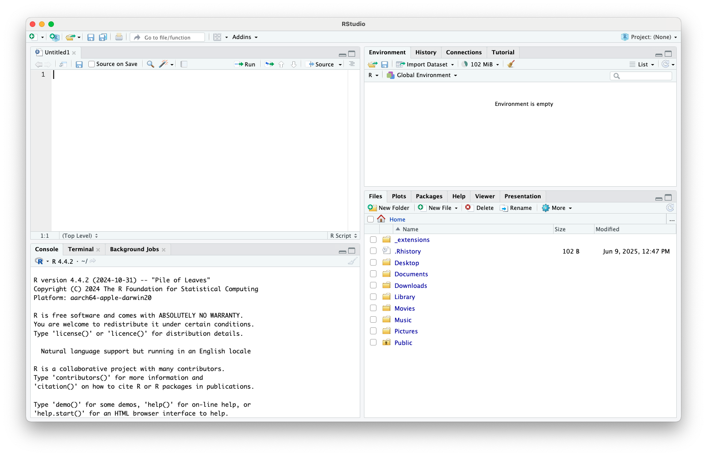
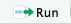
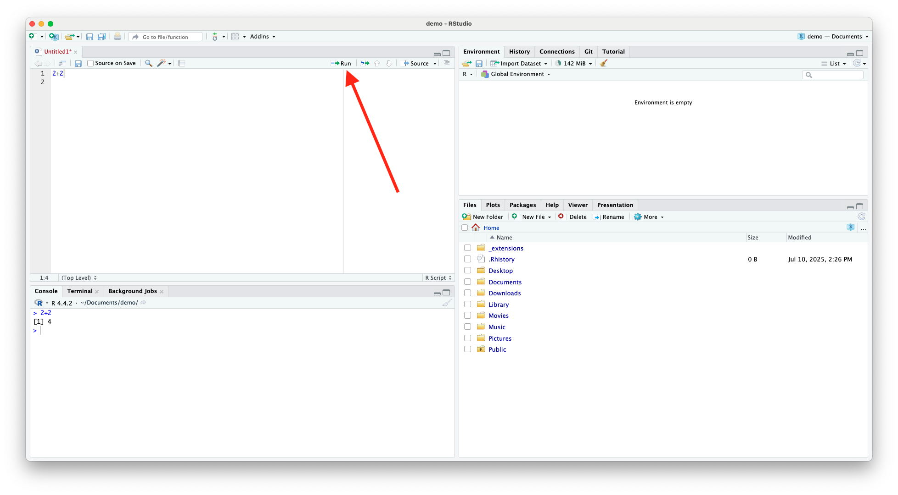
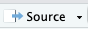
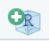
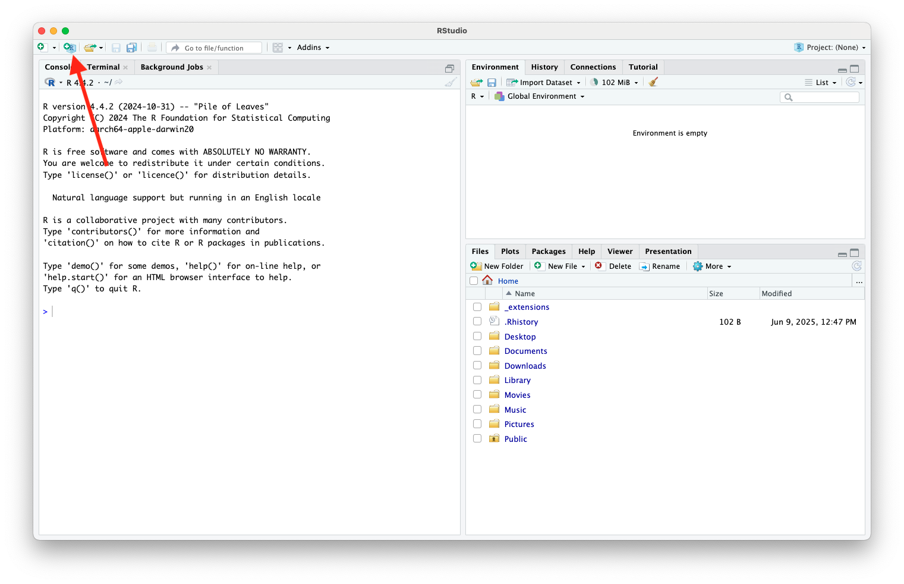
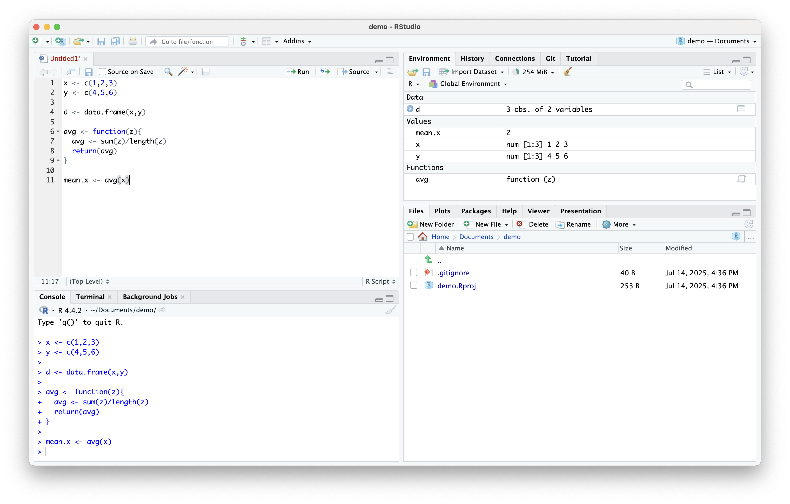
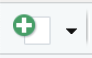
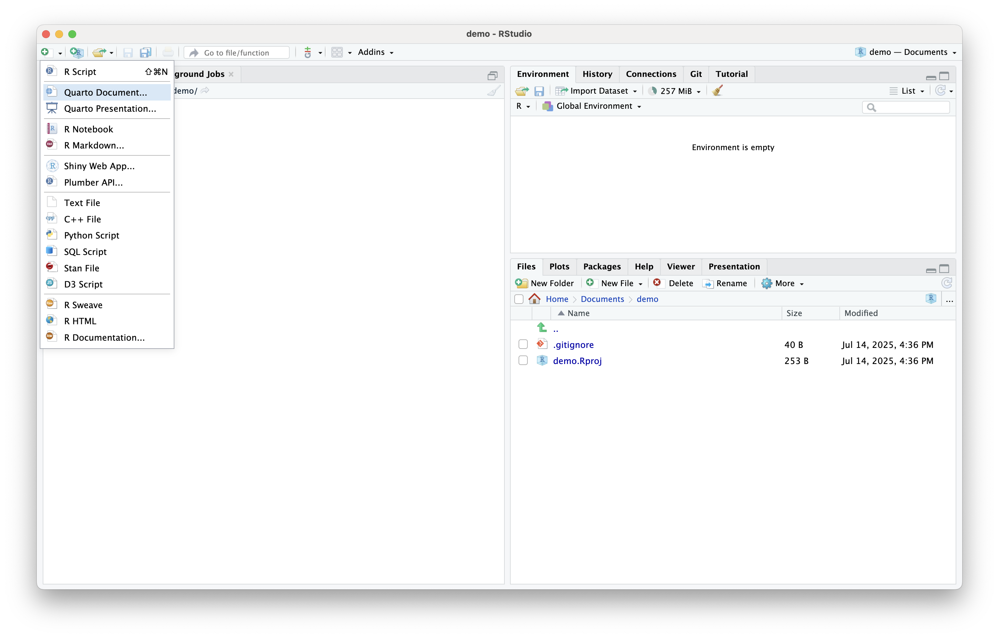
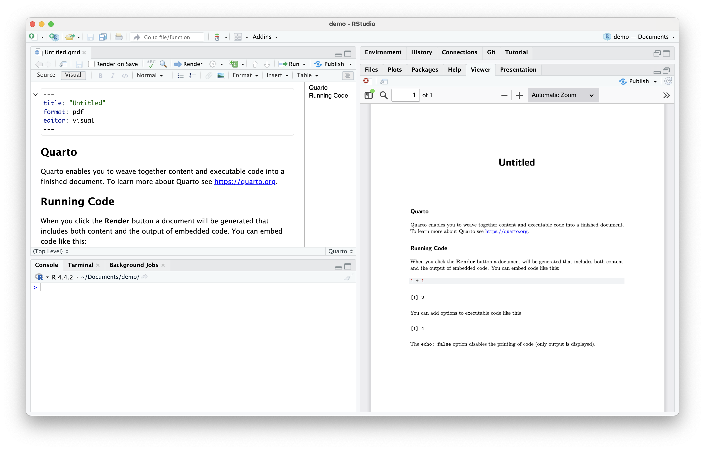

RStudio
Luc Clair
University of Winnipeg | ECON/GECON 3201
Preliminaries
Software
To run R code and use R Studio, you need to install the following software
- R (the programming language)
- RStudio (the interface to work with R)
Installing R
- Download R: https://cran.r-project.org
| Windows Instructions | Mac Instructions |
|---|---|
|
|
Installing RStudio
- Download RStudio: https://posit.co/download/rstudio-desktop/
| Windows Instructions | Mac Instructions |
|---|---|
|
|
Introduction
Why RStudio?
RStudio is an integrated development environment (IDE) for R
- Provides a user-friendly interface for writing code
- Visualizing data
- Managing projects
- Producing reproducible reports (Quarto, R Markdown)
- It streamlines the process of statistical computing and data analysis, making it especially useful for research, teaching, and applied econometrics
IDE for R
- An IDE is a software application that provides a complete set of tools for writing, running, and debugging code in one place
- RStudio combines script editing, console, workspace viewer, and plotting in one interface
- Enables seamless development, testing, and output visualization
Projects for Organization
- Use RStudio Projects to organize coursework, datasets, scripts, and outputs in isolated environments
- Promotes reproducibility and reduces working directory errors
Script Editor with Syntax Highlighting
- Write and run R scripts (.R), R Markdown (.Rmd), and Quarto documents
- Features like auto-completion, function tool-tips, and real-time diagnostics boost coding efficiency
Getting Started with RStudio
First Look
- Open RStudio
Opening a Source Document
- E.g., R script
Opening a Source Document (cont.)
RStudio Interface

RStudio Interface
- Source (Top-Left): Code scripts, R Markdown, Quarto
RStudio Interface (cont.)
- Console (Bottom-Left): Where code runs

RStudio Interface (cont.)
- Environment/History (Top-Right): View objects, data, function history
RStudio Interface (cont.)
- Files/Plots/Packages/Help (Bottom-Right): View plots, install packages, browse files, and search help files
Writing and Running R Code
- Use
.Rscripts to save and re-use code
Writing and Running R Code (cont.)
- Use
Ctrl+Enter(orCmdon Mac) to run a line of code
Writing and Running R Code (cont.)
- Alternatively, you can press the  button at the top of the source window

Running Multiple lines of Code
- Highlight lines of code you want to run, then use
Ctrl+Enteror press the button
- If you want to run entire code script, press  at the top of the source window.
Workflow and RStudio Projects
Workflow
- Step-by-step process you follow to complete a data analysis from raw data to final results
- It includes data loading, cleaning, modeling, and reporting
- A good workflow is organized, repeatable, and transparent
- Reduces errors
- Makes work reproducible and easier to follow
Workflow Example
- Create a project folder/repository/directory
- Load and inspect data
- Clean data
- Estimate an econometric model
- Run robustness checks
- Interpret and report results
- Export results
RStudio Projects
- RStudio projects create a work environment within RStudio
- Essentially, they create a folder containing all project documents, including code scripts, data, images, plots, and text files
- Opening an .Rproj file opens all files for the project the project and automatically sets the working directory to the project directory
Benefits of RStudio Projects
Keeps everything organized
- Each project has its own folder with scripts, data, and results
- Reproducible workflow
- Opens with the same settings, file paths, and environment every time
- Avoids
Setwd()errors- Automatically sets the working directory to the project folder
Benefits of RStudio Projects (cont.)
Manages multiple analyses cleanly
- Lets you separate class assignments, research papers, or datasets into distinct, self-contained units
- Supports version control (Git)
- Built-in Git integration makes it easy to track changes and collaborate on code
- Loads your workspace consistently
- Automatically restores your open files, history, and environment (optional)
Create RStudio Project
- To Create a new RStudio project press the  button

Create RStudio Project (cont.)
- Choose whether you want to create a new folder for your project directory, convert an existing folder into a project directory, or link the project folder to a git repository (more on this next lecture)
Create RStudio Project (cont.)
- Select the type of project you want to create
Create RStudio Project (cont.)
- Choose the location for your project directory and make sure you check the box Create git repository
Create RStudio Project (cont.)
- Your new project directory has been created
- Note the .Rproj file created
Using R in RStudio
Using R in RStudio
- For this course, the main purpose of using RStudio is to facilitate the use of R statistical software
- Most often, we will write R code in an R script
- We can then run code from our script, which shows up in the console as seen above
- Both the code and the results will be displayed in the console
Variables, Datasets, and Functions
- Throughout our analyses, we will store data and results as variables
- We may also group related variables into datasets, or import datasets from external sources
- Additionally, we can create functions to automate repeated tasks and simplify our code
- All saved variables, datasets, and functions will appear in the Environment tab in RStudio, allowing us to view and manage the objects currently in memory
Variables, Datasets, and Functions (cont.)
Inspecting Datasets
- To view your dataset in R, simply type
View(data), wheredatais your dataset
Inspecting Datasets (cont.)
- Other useful commands for inspecting data include
head(),summary(),str()
- Ideal for inspecting data sets, matrices, and model outputs
Installing and Loading R Packages
- R is a statistical software built on user written commands/functions
- Users write functions and group them in packages, which are then made available to all users
- To use a function, you must install the necessary package(s) using
install.packages("package_name")and load it into your session usinglibrary("package_name")
- Many of the functions that we will use in this course are available in the
baseandstatspackages, which load automatically with every R session
Installing and Loading R Packages (cont.)
- To view your available packages and which ones are loaded into a session, click the Packages tab in the bottom right pane
Installing and Loading R Packages (cont.)
- One can also load a package in RStudio by checking the box next to the package name in the Packages tab
Plotting and Output
- R is powerful tool for creating plots and graphics
- RStudio organizes plots under the Plots tab in the bottom right pane
- Allows for easy saving and exporting
Plotting and Output (cont.)
- E.g., plotting the probability density of a standard normal variable
Publishing
Quarto
- Assignments for this course will be written in Quarto
- Quarto is an open-source tool designed for creating dynamic documents, reports, presentations, and websites
- It integrates with various programming languages and provides a unified framework for combining code, narrative text, and data visualization
- More on Quarto in future lectures
Quarto (cont.)
- To open a Quarto document, click the  button in the top-left corner and select “Quarto Document…”

Quarto (cont.)
- Select the format for your document, HTML, PDF, or Word and click Create
Quarto (cont.)
- You can now edit your Quarto document
Rendering a Quarto Document
To view the rendered document click the button and save the file to your desired location
The rendered document shows up under the Viewer tab in the bottom-right pane

Summary
Summary
- All-in-one workspace
- Encourages clean, reproducible code
- Tools for data, models, graphics, reporting
- A key skill for econometrics, data science, and research